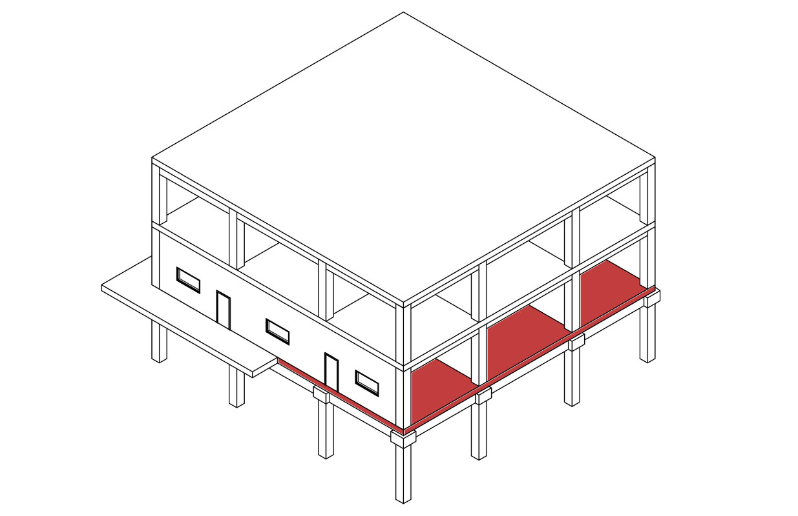
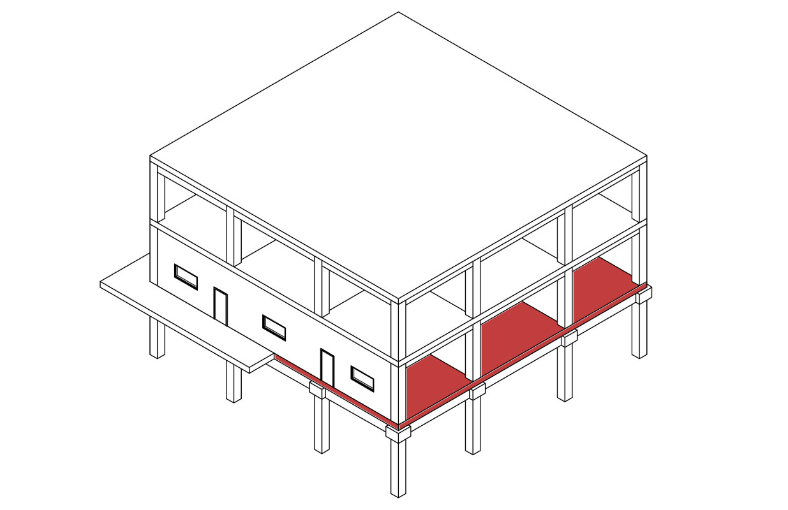
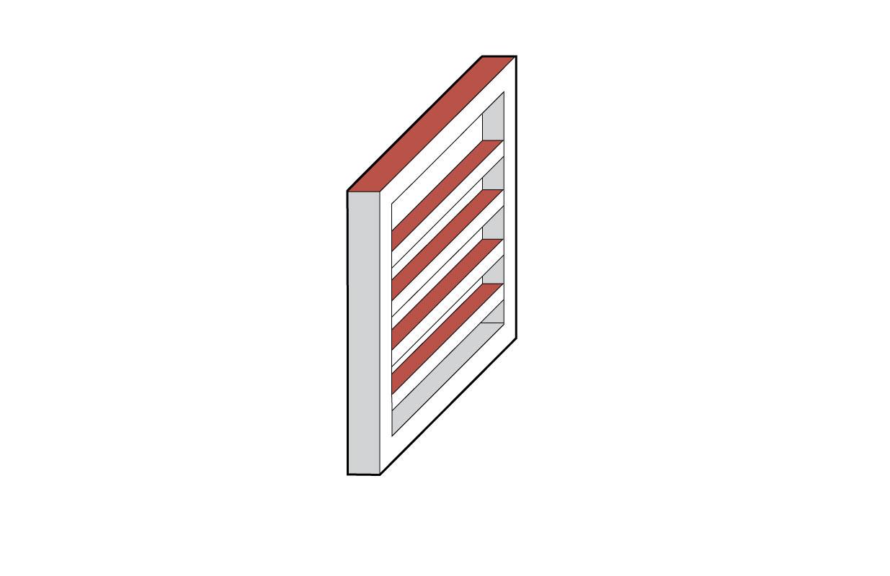
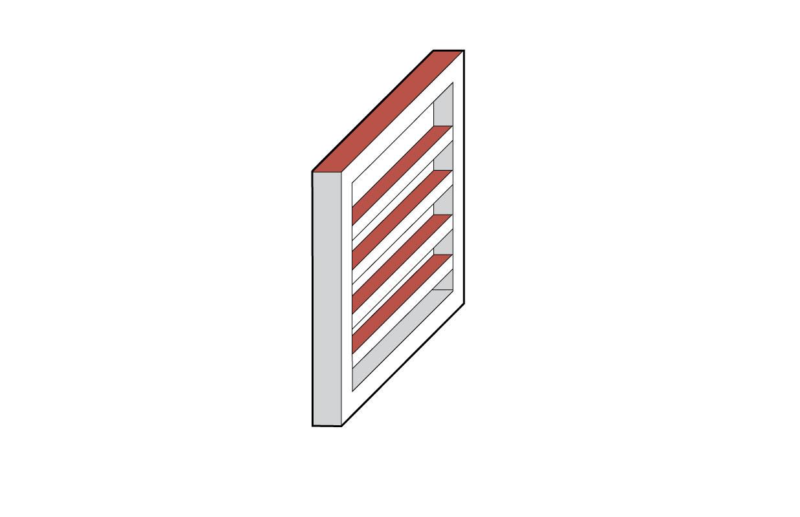
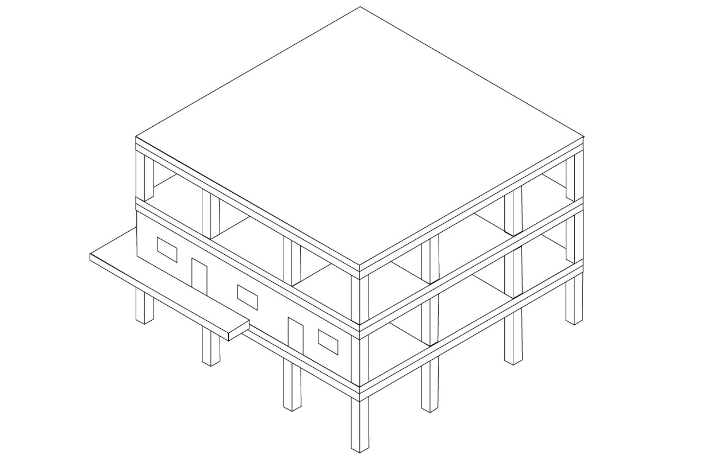
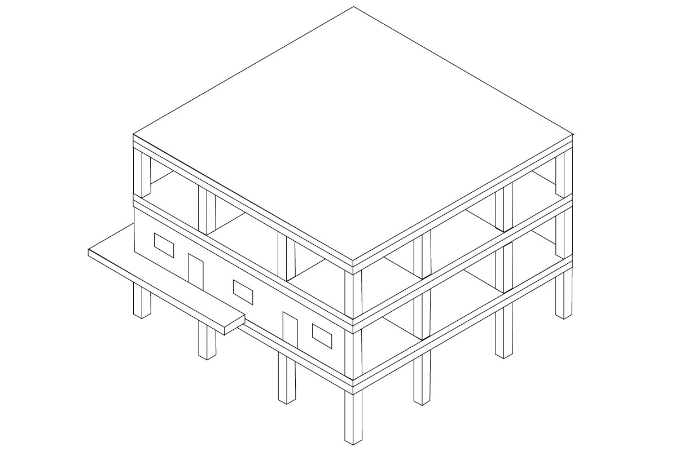

Elementos


 



 

 

Seleccione el sistema constructivo base a aplicar
{{sc}}
{{sc}}
{{sc}}
Materiales {{ 'seccion de materiales' }}
{{ material.value.key }}.
{{material.value.Material}}
{{material.value.Cantidad}}
{{material.value.Unidad}}